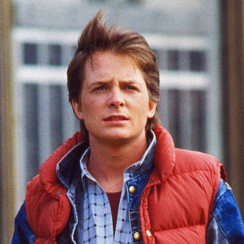
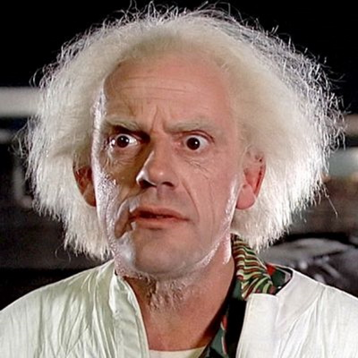
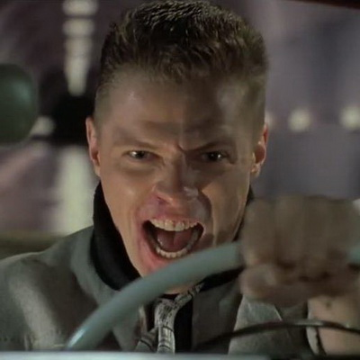
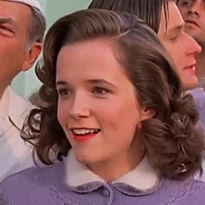
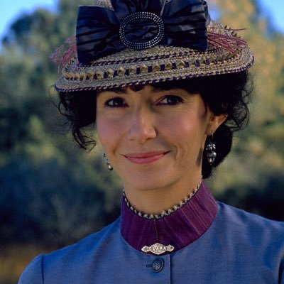
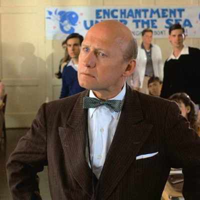

Марти Макфлай
Марти Макфлай

Мартин Шеймус Макфлай (Martin «Marty» Seamus McFly) — главный герой фильма. В фильмах роль Марти исполнил канадско-американский актёр Майкл Джей Фокс.
Биография
Марти родился в городе Хилл-Вэлли 12 июня 1968 года в семье ирландского происхождения.
В 1985 году Марти является ведущим гитаристом музыкальной группы The Pinheads («Тупицы»), слушает группы Huey Lewis and the News, Tom Petty and the Heartbreakers и Van Halen. Отлично катается на скейтборде, метко стреляет на игровом автомате Wild Gunman в местном магазине 7-Eleven и отлично умеет водить машину с механической коробкой передач.
25 октября 1985 года Марти 17 лет, хотя возраст не указывается ни в одной из частей трилогии — лишь на постере первой серии. Однако, когда Док говорит, что хочет отправиться на 30 лет вперёд, Марти говорит, что ему тогда будет 47. На сувенирных водительских правах, которые можно купить в некоторых магазинах (к примеру, на eBay), датой рождения Марти указано 12 июня 1968 года, а также указан его адрес: Лайонс-Драйв, 9303.
Семья и друзья
Марти — младший из троих детей в семье Джорджа и Лоррейн Макфлай. У него есть брат Дэйв и сестра Линда. Его возлюбленную зовут Дженнифер Паркер, а лучшего друга — Эмметт Браун. Браун, которого Марти зовёт просто «Док» — пожилой учёный. Кажется, что Марти стесняется своей семьи и поэтому проводит с ней очень мало времени. В основном он общается с Доком, Дженнифер и ребятами из своей музыкальной группы.
Обстоятельства знакомства Марти и Дока неизвестны, хотя в первоначальном сценарии упоминалось, что в 1983 году Док нанял Марти, чтобы тот убирал его гараж, и мужчина был готов платить мальчику 50 долларов в неделю, давая также бесплатное пиво и доступ к его раритетным пластинкам. Однако в конце концов сценаристы Роберт Земекис и Боб Гейл решили, что такая история противоречит конечной концепции персонажа, и просто предположили, что дружба возникла на основе обычного любопытства, которое испытывают люди, встретив такого эксцентричного человека, как Док.
К 2015 году Марти женат на Дженнифер, у них двое детей — сын Мартин Макфлай-младший и дочь Марлин, которая родилась 28 апреля 1998 года. Дети очень похожи на своего отца, во втором фильме оба персонажа сыграл Майкл Джей Фокс. Как бы там ни было, решение не участвовать в гонке с Нидлзом в конце третьей части могли повлиять на ход событий и изменить будущее, которое зрители видели в «Назад в будущее 2».
Псевдонимы
Путешествуя в прошлое Марти брал себе псевдонимы, чтобы его не узнали. Оказавшись в 1955 году он воспользовался тем, что его мать Лоррейн прочитала на его трусах название знаменитой марки «Кельвин Кляйн» и взял себе это имя. Чтобы убедить Джорджа пригласить Лоррейн на танцы, Марти предстал перед ним в радиационном костюме и назвался Дартом Вейдером с планеты Вулкан — Дарт Вейдер главный злодей фильмов «Звёздные войны», а планета Вулкан — родина Спока, одного из персонажей вселенной «Звёздный путь». В 1885 году он назвался Клинтом Иствудом (авторы просили у актёра разрешения использовать его имя в фильме).
Эмметт Браун

Доктор Эмметт Латроп Браун (Emmett Lathrop Brown), более известный как Док. Роль исполнил американский актёр Кристофер Ллойд. Актёр также исполнил роль Дока в видео-сегментах мультсериала «Назад в будущее» и озвучил персонажа в игре 2010 года. В мультсериале Док говорил голосом актёра Дэна Кастелланеты
Биография Дока
Отец Эмметта — Эрхардт фон Браун, работал судьей в главном судебном здании Хилл-Вэлли. У Эмметта не было никаких доступов к науке, однако в 13 лет под влиянием романов Жюля Верна юноша начал интересоваться наукой. А в 16 лет у Эмметта появилась даже собственная лаборатория. Отец Дока был против интереса к науке у своего сына, по поводу этого отец и сын очень часто ругались и спорили. Отец каждое утро говорил ему, что такое закон и чем он должен заниматься в будущем. Однако Док не послушал своего родителя и стал ученым.
В 1932 году в возрасте семнадцати лет, вдохновившись романом Жюля Верна «Путешествие к центру Земли» (опубликованным в 1864 году), Док решил прокопать туннель, но из этой затеи ничего не вышло.
Иногда создаётся впечатление, что Док — просто сумасшедший, но это не так: просто он настолько увлечён изобретательством, что, порой, не замечает того, что происходит вокруг. Поэтому у него почти нет друзей — за исключением Марти и Дженнифер.
На данный момент все известные сведения о жизни Дока до начала событий трилогии были взяты из альтернативных вариантов сценария и мультсериала. Многие поклонники трилогии считают, что выдуманный персонаж — Док Браун — может быть родственником известного учёного Вернера Фон Брауна.
О семье Дока известно немногое: его мать зовут Сарой Латроп (что объясняет его среднее имя — инициал «Л» в фильмах. Латроп к тому же наоборот читается как Портал. Именно так изначально должен был называться фильм). У Сары был брат Абрахам. Предки Дока по материнской линии живут в Хилл-Вэлли где-то с 1880-х годов, в то время как семья отца переехала в город в 1908 году, и «фамилия у них была Фон Браун» — они сменили имя во время Первой мировой войны. Предположительно, они перебрались в США из Германской империи или Австро-Венгрии.
Также Земекис предположил, что в 1940-х годах Док работал над Манхэттенским проектом — это могло бы объяснить познания Дока в ядерной физике и возможностях плутония. Земекис говорит, что Док учился в таких колледжах, как Университет Калифорнии и Беркли.
В DVD комментариях к первому фильму Земекис и Гейл указали на тот факт, что на фургончике, из которого впервые появляется ДеЛореан, у магазина «Две сосны» можно заметить надпись «Доктор Э. Браун Энтерпрайзес: Круглосуточный научный сервис!» («Dr E. Brown Enterprises: 24 Hr. Scientific Services.»). Судя по всему, этим и зарабатывает себе на жизнь Док. Боб Гейл говорит: «Если кому-то из жителей Хилл-Вэлли вдруг понадобится помощь в научном проекте или в чём-то ещё подобном — они знают, куда звонить».
Любимая фраза Дока «Святые угодники!» (англ. Great Scott). Док играет на альт-саксофоне, который можно заметить лежащим в его гараже во время начальных титров первого фильма. Также ему нравится кино — жанр вестерн.
Знакомство с Марти
Зрителям никогда не рассказывалось, при каких именно обстоятельствах познакомились Марти и Док, хотя в первоначальной версии сценария упоминался 1983 год: Док предлагает Марти работу за 50 долларов в неделю, бесплатное пиво и доступ к раритетным музыкальным записям, если Марти наведёт порядок в гараже Дока.
Тем не менее, сценаристы Роберт Земекис и Боб Гэйл отказались от этих разъяснений, ограничившиеся лишь комментарием, вроде «детей всегда интригуют странные люди, живущие по соседству». В фильме Марти и Док знакомятся в 1955 году, когда юноша появляется на пороге дома учёного и сообщает ему, что прибыл из будущего. Судя по всему, чтобы не изменить ход истории, Док скрыл факт знакомства с Марти от юноши, дабы всё развивалось своим чередом, и Марти, как ему и было предначертано, отправился в 1955 год, где чуть не помешал знакомству своих родителей, а значит поставил под угрозу своё существование.
Изобретение машины времени
В 50-е Док работал в качестве профессора в Университете Хилл-Вэлли. В это же время Док получает состояние своей семьи, которое тратит на свои научные нужды и проекты. 5 ноября 1955 года он загорается идеей постройки машины времени после того, как, желая повесить часы, упал с унитаза и ударился головой о край умывальника. Когда он был без сознания, к нему пришло видение «потокового накопителя», делающего путешествия во времени возможными.
Вскоре, однако, Док тратит всё своё состояние на постройку машины времени и теряет дом — шикарный особняк Браунов. Днём он работает в некой технической службе поддержки под названием «Доктор Э. Браун Энтерпрайзес: Круглосуточный научный сервис!».
Чтобы закончить проект машины времени, Док начинает работать на ливийцев, но, обманув их, сбегает с плутонием, необходимым в качестве топлива. Эта выходка приводит к тому, что прямо на глазах у Марти преступники расстреливают учёного у магазина «Две сосны». Спасаясь от преследования, Марти садится в ДеЛориан и перемещается в 1955 год, оставив Дока у фургона.
Позже по сюжету фильма выясняется, что Марти в 1955 году удалось предупредить Дока о таком повороте событий, и учёный предусмотрительно надел бронежилет к моменту атаки преступников, что спасло его от смерти.
Бифф Таннен

Бифф Таннен — главный отрицательный персонаж трилогии. Роль Биффа в фильмах исполнил актёр Томас Ф. Уилсон — он также озвучил своего персонажа в мультсериале, а в серии игр роль досталась актёру и певцу Киду Бейонду.
Бифф Таннен родился 26 марта 1937 года в Хилл-Вэлли, штат Калифорния. Бифф — очень высокий и сильный юноша с весьма дурным характером и повадками первого хулигана города. Бифф не очень умён и смог окончить школу только благодаря тому, что среди его жертв был Джордж МакФлай, выполнявшие все домашние задания за Таннена, и, в конечном счёте, Бифф стал начальником Джорджа, а его желание быть мужем Лоррейн так и не прошло.
Согласно ранней версии сценария 1980 года, полное имя Биффа было «Бифф Говард Таннен». В сценарии Бифф говорит: «Да, кстати! Моя детка продаёт Гёлскаутские печенюшки. Я сказал ей, что ты возьмёшь 4 пачки! Не делай из меня лжеца, МакФлай!». Существует подобная удалённая сцена в первой части трилогии, в которой сосед МакФлаев и его дочь заставляют Джорджа купить коробку ореховых мюсли. Соседа звали Говардом. При создании второй части фильма основой для персонажа служил уже известный в то время Дональд Трамп
Лоррейн МакФлай

Лоррейн МакФлай, урождённая Бэйнс, родилась в 1938 году. У очень красивой девушки довольно большая семья — братья Милтон, Тоби и Джоуи, сестра Салли, а также ещё один родственник, не упомянутый в фильме — когда в 1955 году Марти гостит в доме Бейнсов, очевидно, что Стелла ожидает очередного ребёнка. Среди них выделяется младший брат, дядя Джоуи, которого в 1985 году «так и не выпустили из тюрьмы».
Судьбой было предсказано, что Сэм Бейнс, отец Лоррейн и дед Марти, Линды и Дэйва, собьёт машиной Джорджа МакФлая, наблюдающего за «кошками» (на самом деле подглядывающего за переодевающейся в своей спальне Лоррейн), расположившись на свисающей над проезжей частью ветке дерева и затем упавшего под колеса авто 5 ноября 1955 года; поддавшись чувству жалости, Лоррейн проявляет симпатию к юноше, когда выхаживает его, а неделю спустя идёт с Джорджем на вечер танцев под названием «Морское Упоение», в будущем они женятся и у них рождаются трое детей.
Миссис Лоррейн МакФлай кажется Марти чересчур критичной по отношению к современным девочкам, которые «прячутся вместе с мальчиками в машинах», ведь красавица-девушка получила консервативное воспитание от своих родителей Сэма и Стеллы Бейнс.
По стечению обстоятельств Марти переносится во времени и оказывается в 1955 году — именно тогда и познакомились будущие родители мальчика — и мешает их встрече. Более того, Лоррейн влюбляется в Марти, а геройский отпор, который юноша оказал местному хулигану Биффу Таннену (также влюблённому в Лоррейн) и его банде, не оставляет бедному Джорджу и шанса на внимание со стороны девушки, оказавшейся не такой скромной, как она рассказывала детям.
Тогда находчивый Марти решает доказать Лоррейн, что Джордж — не размазня и предлагает инсценировать драку, в ходе которой Марти выступит злодеем. Однако не вовремя вмешивается Бифф, и, ко всеобщему удивлению, Джордж в буквальном смысле собирает волю в кулак и даёт отпор Таннену, став школьной звездой и предметом обожания Лоррейн.
Когда Марти и Док оставляют машину времени без присмотра, Бифф из 2015 года отправляется в 1955 год со спортивным альманахом, передав его себе в юности и сделав себя самым обеспеченным жителем Хилл-Вэлли и мировой знаменитостью. Лоррейн приходится терпеть к себе жестокое обращение со стороны Биффа — ведь после таинственной смерти Джорджа Лоррейн становится женой Биффа, чтобы спасти своих детей, оказавшихся в различного рода неприятностях. Когда Док и Марти возвращают нормальное положение вещей, они находят Лоррейн в объятиях Джорджа и окружении любимых детей.
Для второй части была снята сцена, которую впоследствии удалили из финальной версии картины: престарелый Бифф Таннен возвращает ДеЛореан в 2015 год, а затем исчезает из действительности, также как это чуть не случилось с Марти в конце первой части. Гейл объясняет это тем, что Лоррейн застрелила Биффа приблизительно в 1996 году изменённой реальности. Однако судороги Биффа сценаристы объясняют просто — у него случился сердечный приступ.
В заключительной части трилогии Лоррейн появляется в самом конце, вместе с Джорджем в исправленном 1985 году, где МакФлаи счастливы в браке, вышел первый роман Джорджа, а Дэйв и Линда преуспевают в карьере и личной жизни. Несмотря на то, что все основные события первой части трилогии вращались вокруг Лоррейн и Джорджа, ни один из них не появляется в мультипликационном продолжении.
Клара Клейтон

Клара Клейтон родилась в 1855 году в Нью-Джерси. Её родители — Дэниел и Марта Клейтоны. Её дядя Улисс Си Клейтон был генералом во время Гражданской войны. Она очень образованна, много читает, среди любимых писателей — Жюль Верн. При ней всегда её телескоп, который Дэниел подарил одиннадцатилетней дочери, когда та была больна дифтерией и не могла выходить из дома. В ранней версии сценария, действие фильма происходило в 1888 году, а Клара была вдовой из Сильвер-Сити.
Предположительно, было 4 сентября, когда она покинула дом и направилась в Хилл-Вэлли. По прибытии в город, Клара обнаружила, что никто не встретил её, и решила сама доехать до своего нового дома. Но лошадь спугнула змея, и животное понеслось к пропасти. Однако Док, который и должен был встретить Клару, вовремя спас женщину от неминуемой гибели на дне ущелья.
Эта была любовь с первого взгляда: вопреки своим научным убеждениям Док был вынужден признать, что его словно молнией поразило, когда он увидел Клару. Док приглашает мисс Клейтон на фестиваль Хилл-Вэлли, где встречает банду Бьюфорда Таннена, напоминающего, что за Доком должок. Однако Клара даёт понять, что может за себя постоять.
Тем временем, понимая, что путешествия во времени становятся всё опасней, Док решает покинуть 1885 год вместе с Марти, перед этим попрощавшись с Кларой. Но объяснения Дока Клара воспринимает иначе, чему он думал — женщине кажется, что Док использовал её. Расстроенный Док напивается в баре, возле которого должна была произойти дуэль Марти и Бьюфорда Таннена.
А утром, 7 сентября, Клара, в расстроенных чувствах, собирает вещи и садится на поезд, который должен был увезти её прочь из Хилл-Вэлли. Однако она слышит разговор двух джентльменов о неком мужчине, убивающегося из-за того, что он причинил возлюбленной много боли. Клара понимает, что речь идёт об Эмметте. Она нажимает на рычаг экстренной остановки поезда и сходит с него, пока Док и Марти угоняют грузовой поезд для разгона ДеЛореана
Вернувшись в кузницу Эмметта, Клара находит макет их последнего путешествия во времени, и понимает, что Док не обманул её, рассказывая об истинной причине своего отъезда. Она догоняет поезд, на полном ходу движущийся к пропасти, и, рискуя своей жизнью, говорит Эмметту, что любит его. Марти помогает Доку и Кларе с помощью ховерборда благополучно сойти с поезда, а сам исчезает в пространстве и оказывается в родном 1985 году.
О дальнейших приключениях Дока и Клары ничего неизвестно. Мы знаем лишь, что спустя несколько часов, а, может быть, и меньше, Док прибывает на Паровозе времени в 1985 году, где знакомит Марти и Дженнифер со своей семьёй — ставшей его женой Кларой и сыновьями Жюлем и Верном. Док и Клара поженились 15 декабря 1885 года. Сначала, предположительно, в 1886 году родился Жюль, а затем и Верн в 1888 году.
Джеральд Стрикленд

Мистер Стрикленд родился в 1925 году. Строгий, авторитарный директор школы Хилл-Вэлли, испытывающий сильную неприязнь к людям, которых можно описать словом «размазня» (в частности, таковыми, по его мнению, был Джордж МакФлай и его сын, Марти). Мистер Стрикленд придерживается строгой дисциплины: «запомни это слово» — вот что сказал умирающий шериф Джеймс Стрикленд — дед директора школы.
Мистер Стрикленд с неодобрением относился к дружбе Марти и Дока и называл учёного сумасшедшим. Как следует из фильмов, и в 1955 году, и в 1985 мистер Стрикленд занимает пост директора школы. И в 1955 году он был лысым.
В альтернативной реальности в 1985 году, где Бифф Таннен стал самым богатым человеком, школа была разрушена примерно в 1979 году, а у самого Стрикленда большие неприятности. Мистер Стрикленд оказывается безработным, который вступает в перестрелку со своими бывшими учениками. Они оказываются преступниками, стреляющими по его дому из машины как раз в тот момент, когда к его крыльцу подходит Марти за газетой.